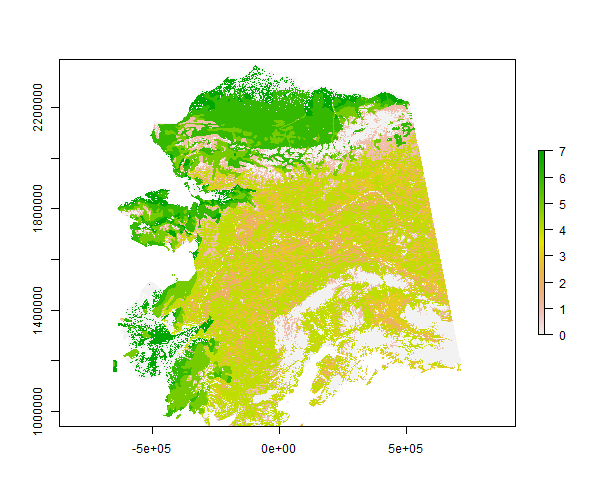

While snapgrid is a data package, it does contain one helper function that prints out a simply summary of all the available data sets in the package along with some basic metadata. If you are new to the package or just need a quick reminder of what data you were using previously, this is a convenient way to get started.
library(snapgrid)
snapgrids()
#> # A tibble: 7 x 4
#> data domain res description
#> <chr> <chr> <int> <chr>
#> 1 akcan2km akcan 2000 Domain mask
#> 2 akcan1km akcan 1000 Domain mask
#> 3 ak1km ak 1000 Domain mask
#> 4 swveg ak 1000 Vegetation class IDs
#> 5 swfmo ak 1000 Fire mgmt options (FMO)
#> 6 swratios ak 1000 FMO suppression ratios
#> 7 swflam ak 1000 GBM flammability maskHere is a print summary of the Alaska classic “statewide” ALFRESCO spatial domain vegetation map layer.
swveg
#> class : RasterLayer
#> dimensions : 1450, 1374, 1992300 (nrow, ncol, ncell)
#> resolution : 1000, 1000 (x, y)
#> extent : -656204.4, 717795.6, 940439.8, 2390440 (xmin, xmax, ymin, ymax)
#> coord. ref. : +proj=aea +lat_1=55 +lat_2=65 +lat_0=50 +lon_0=-154 +x_0=0 +y_0=0 +datum=NAD83 +units=m +no_defs +ellps=GRS80 +towgs84=0,0,0
#> data source : in memory
#> names : swveg
#> values : 0, 7 (min, max)To access documentation on this data set, use help(swveg) or the alias ?swveg. This will provide more information such as the vegetation key for the integer IDs in the layer.
Here is a basic plot of the vegetation layer using the raster package.
library(raster)
plot(swveg)
Try some other raster functions on the vegetation layer.
extent(swveg)
#> class : Extent
#> xmin : -656204.4
#> xmax : 717795.6
#> ymin : 940439.8
#> ymax : 2390440
projection(swveg)
#> [1] "+proj=aea +lat_1=55 +lat_2=65 +lat_0=50 +lon_0=-154 +x_0=0 +y_0=0 +datum=NAD83 +units=m +no_defs +ellps=GRS80 +towgs84=0,0,0"In addition to extent, the functions xmin, xmax, ymin and ymax are available for individual boundary values. The Alaska Albers equal area conic projection is shared across all data sets in snapgrid. This is also consistent with data sets in the snappoly package.
Making stacks or bricks is as simple as:
s <- stack(ak1km, swveg)
b <- brick(s)
b
#> class : RasterBrick
#> dimensions : 1450, 1374, 1992300, 2 (nrow, ncol, ncell, nlayers)
#> resolution : 1000, 1000 (x, y)
#> extent : -656204.4, 717795.6, 940439.8, 2390440 (xmin, xmax, ymin, ymax)
#> coord. ref. : +proj=aea +lat_1=55 +lat_2=65 +lat_0=50 +lon_0=-154 +x_0=0 +y_0=0 +datum=NAD83 +units=m +no_defs +ellps=GRS80 +towgs84=0,0,0
#> data source : in memory
#> names : ak1km, swveg
#> min values : 1, 0
#> max values : 1, 7Cropping and masking is also easy to do. Below the akcan1km raster layer is cropped and masked to the ak1km layer. This is not a useful operation for these two particular data sets, but illustrates the process.
mask(crop(akcan1km, ak1km), ak1km)
#> class : RasterLayer
#> dimensions : 1450, 1374, 1992300 (nrow, ncol, ncell)
#> resolution : 1000, 1000 (x, y)
#> extent : -656223.2, 717776.8, 940412.9, 2390413 (xmin, xmax, ymin, ymax)
#> coord. ref. : +proj=aea +lat_1=55 +lat_2=65 +lat_0=50 +lon_0=-154 +x_0=0 +y_0=0 +datum=NAD83 +units=m +no_defs +ellps=GRS80 +towgs84=0,0,0
#> data source : in memory
#> names : akcan1km
#> values : 1, 1 (min, max)In this case we will resample the 2-km Alaska/western Canada map layer to the 1-km Alaska ALFRESCO layer. The difference in resolution requires a different approach. crop will work, but will retain the 2-km resolution. mask cannot be subsequently applied because the extent of the cropped 2-km layer will not exactly match that of the 1-km layer. Instead, resample, since the two layers share a common spatial projection. If the two maps were in different projections, projectRaster could be used instead of resample. In either case, the result can be used in the subsequent call to mask.
mask(resample(akcan1km, ak1km), ak1km)
#> class : RasterLayer
#> dimensions : 1450, 1374, 1992300 (nrow, ncol, ncell)
#> resolution : 1000, 1000 (x, y)
#> extent : -656204.4, 717795.6, 940439.8, 2390440 (xmin, xmax, ymin, ymax)
#> coord. ref. : +proj=aea +lat_1=55 +lat_2=65 +lat_0=50 +lon_0=-154 +x_0=0 +y_0=0 +datum=NAD83 +units=m +no_defs +ellps=GRS80 +towgs84=0,0,0
#> data source : in memory
#> names : akcan1km
#> values : 1, 1 (min, max)Other related functions include aggregate and disaggregate.
Without coercing raster layers to another type of object, many other common operations can be performed on them. For example, arithmetic operators, +, -, *, /, %%, can be applied to multiple rasters, as can logic operators, >, <, ==, !=, and more. Many other functions can also be applied directly. Here are a couple functions applied to a single raster layer.
cellStats(swratios, mean)
#> [1] 1.077797
freq(swveg)
#> value count
#> [1,] 0 259505
#> [2,] 1 109995
#> [3,] 2 115023
#> [4,] 3 120894
#> [5,] 4 401662
#> [6,] 5 100603
#> [7,] 6 158502
#> [8,] 7 62963
#> [9,] NA 663153This introduction is only intended to expose you to some data sets in snapgrid, not to introduce the raster package. The latter is large and there is simply far to much to include here anyway. However, the raster package is highly applicable since snapgrid contains purely raster data. To learn more about how to efficiently and effectively work with this type of data in R, see the documentation associated with the raster package.
The snappoly package is also recommended. Data sets included there are not duplicated in rasterized form here. These two packages compliment one another and each offers data sets that are most commonly utilized at SNAP in the respective vector or raster format. For a similar introduction to snappoly, see the corresponding vignette to get started.